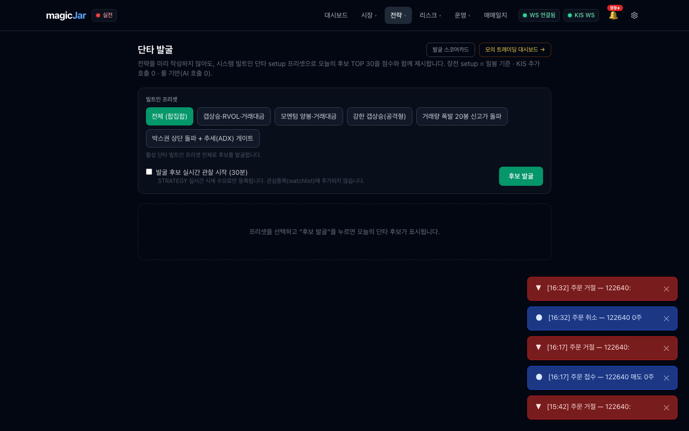
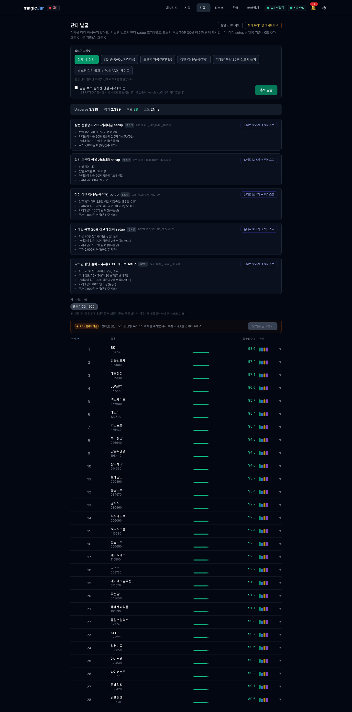
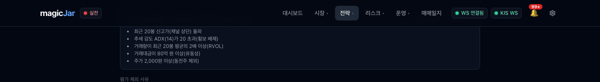
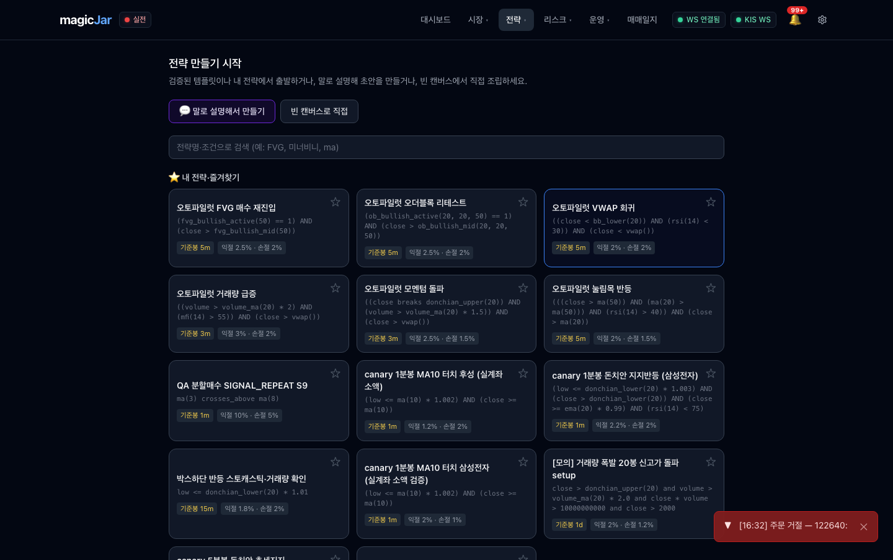
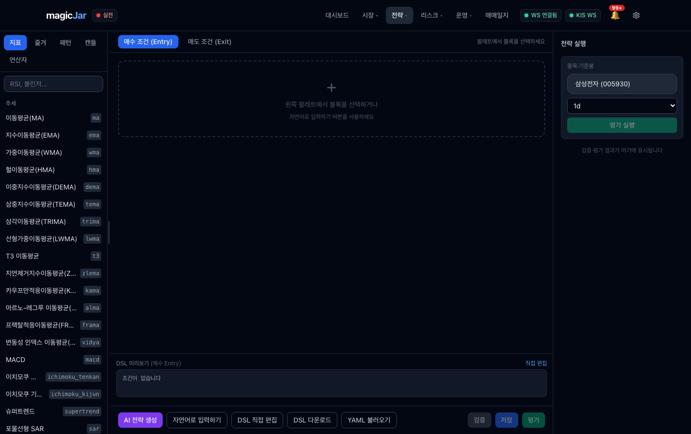
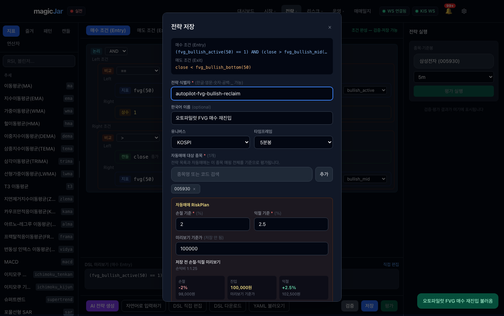
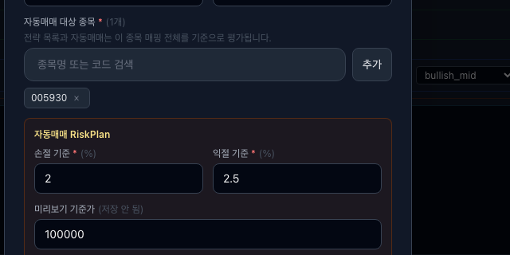
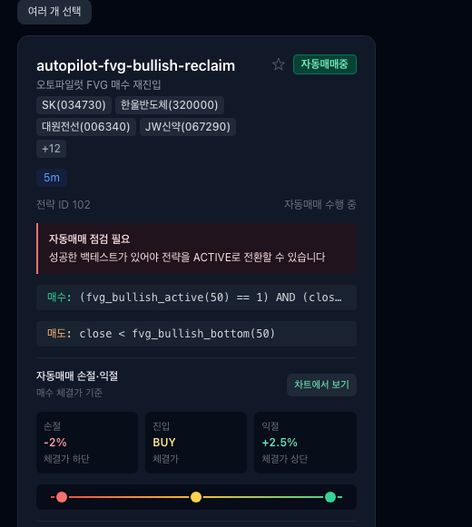

사용자(최고 관리자)가 autopilot-fvg-bullish-reclaim(전략 102 · FVG · 5m · 16종목)을 UI로 직접 재현하되, 종목을 수동 입력이 아니라 추천(discovery) 기반으로 담는 흐름을 실제 화면 순서대로 검증한 결과.
DB 직접 조회로 전략 102의 현재 상태를 확정했다 (진실원 대조 — 사용자 메모리 정합).
id | name | name_ko | owner | tf | status 102 | autopilot-fvg-bullish-reclaim | 오토파일럿 FVG 매수 재진입 | AUTOPILOT | 5m | ACTIVE codes (jsonb, 16종): ["034730","320000","006340","067290","356680","122640","475430","026940","198440","014950","000890","084670","030960","056090", ... +2]
GET /api/strategy?userId=는 findAllByUserId — owner 필터 없음 → AUTOPILOT 전략도 사용자 목록에 그대로 섞여 노출됨사용자가 기대하는 흐름 (의도):
↑ 가운데 빨간 노드("전략 universe에 담기")가 UI에 존재하지 않는다.
실제 UI로 가능한 흐름 (현재):
/strategy/daytrade-discover상단 메뉴 전략 ▾ → 단타 발굴. "전략을 미리 작성하지 않아도 오늘의 후보 TOP30을 점수와 함께 제시"하는 진입점. 빌트인 프리셋 6종(전체 합집합 / 갭상승·RVOL·거래대금 / 모멘텀 양봉 / 강한 갭상승 / 거래량 폭발 신고가 / 박스권 상단 돌파+ADX)이 보인다. 전략 102의 setup과 직결되는 프리셋 선택 가능.

"후보 발굴" 클릭 → 약 수 초 내 universe 2,517종 평가 후 점수순 TOP30 표 출력(실데이터, KIS 추가 호출 0·일봉 기준). 1위 SK(034730) 98.6점, 2위 한울반도체(320000) 97.4, 3위 대원전선(006340) 97.1 … — 전략 102 codes와 동일한 종목들이 상위에 올라온다. 즉 발굴 엔진 자체는 정상 동작하며 102의 universe 토대를 만들 수 있다.

후보 행을 펼치면 종목별 액션은 정확히 두 가지뿐이다: "종목 상세", "관심종목 추가". (소스 DaytradeMatchTable.tsx L225·L243 확인.) 특정 프리셋 선택 시 상단에 다중선택 + "모의로 굴려보기"(페이퍼 승격) 툴바가 추가된다.
어떤 액션도 "이 후보들을 전략의 자동매매 대상 종목(universe codes)으로 담는다"로 이어지지 않는다. 다중선택 체크박스조차 페이퍼 승격 전용이며, "선택한 N종을 전략 universe로" 라는 분기가 없다.

발굴 결과 상단 프리셋 메타 카드에 "빌더로 보내기 → 백테스트" 버튼이 있다(onSendToBuilder). 누르면 /strategy/builder?researchDraftId=...로 이동한다. 그러나 이 draft가 옮기는 것은:
StrategyResearchBuilderDraft {
entryDsl, exitDsl, // 진입/청산 조건 (DSL)
code, // ← 발굴 "1위" 단일 종목 1개만 (평가 기준)
stopLossPct, takeProfitPct
}
// ✗ 후보 리스트(16종)는 전혀 포함되지 않음
즉 빌더로 넘어가도 universe codes는 비어 있고 평가종목 1개만 채워진다. 추천 16종을 universe로 옮기는 기능이 아니다.
/strategy/builder빌더 진입 시 "전략 만들기 시작" 화면(템플릿·내 전략·검색·말로 설명·빈 캔버스). 흥미롭게도 검증 템플릿에 "오토파일럿 FVG 매수 재진입"(=전략 102와 동명) 카드가 보인다 — 즉 102의 DSL은 템플릿으로 불러올 수 있으나, 이는 조건만이고 universe와 무관.

"빈 캔버스로 직접" → 3분할 빌더(좌 블록 팔레트 / 중 캔버스 entry·exit 탭 / 우 전략 실행). 좌측 팔레트에서 지표·패턴·캔들·연산자 블록을 골라 FVG 매수 재탈환 조건을 구성하고, 우측 종목·기준봉에서 평가 인터벌을 5m로 선택한다.

조건 작성 후 "저장" → 저장 모달. "자동매매 대상 종목"(=universe codes) 필드는 "종목명 또는 코드 검색" 입력창 + "추가" 버튼뿐이다. 한 종목씩 검색해 추가하는 방식 — 16종을 담으려면 수동으로 16번 반복해야 한다. 발굴/추천 결과를 불러오는 버튼·"추천에서 담기"·"발굴 TOP N 가져오기" 같은 연결고리가 전혀 없다.


/strategy/list전략 목록에서 102 카드를 확인했다. 결과적으로 일반 USER 전략과 시각적으로 구분되지 않는다 — owner=AUTOPILOT 배지가 없고, "빌더에서 수정 / 복제 / 자동매매 중지 / 삭제" 동일 액션이 모두 노출된다. 사용자가 무심코 AUTOPILOT 관리 전략을 수정·삭제할 수 있다.
또한 카드에 "자동매매 점검 필요 — 성공한 백테스트가 있어야 전략을 ACTIVE로 전환할 수 있습니다" 경고가 떠 있다. 그러나 DB status는 이미 ACTIVE이고 배지는 "자동매매중"이다 → DB 직접 ACTIVE 주입이 UI의 "백테스트 게이트"를 우회해 생긴 상태 표시 모순.

/strategy/scorecard발굴 TOP N의 다음 거래일 실제 적중률(forward-test)을 누적 기록하는 화면. 추천 품질을 사후 검증하는 데이터는 존재하나, 이 화면에서도 "이 후보를 전략 universe로" 같은 액션은 없다. (스코어카드 전체는 매우 긴 표 — 캡처 assets/05-scorecard.png 참조.)
| 우선 | 갭 | 내용 · 증거 | 제안 (후속 트랙) |
|---|---|---|---|
| P0 | 추천(discovery) → 전략 universe 연결 부재 | 발굴 후보 → watchlist / 페이퍼 / 빌더(DSL만) 3갈래뿐. "선택한 후보를 전략 자동매매 대상 종목으로 담기" 경로가 UI·백엔드 모두 없음. (그림 2b·3·7b / DaytradeMatchTable.tsx L225·243 / builderDraft.ts code 단일 / StrategyResearchController에 universe-build 엔드포인트 없음). → 사용자 의도 재현 불가, orchestrator DB UPDATE가 이 갭을 우회 중. |
발굴 다중선택 → "전략 universe로 보내기" 액션 + 빌더 universe 프리필 / draft에 codes[] 추가 + 백엔드 universe set 경로 |
| P0 | 빌더 draft가 universe를 운반하지 않음 | "빌더로 보내기 → 백테스트" draft는 code 단일(발굴 1위)만 운반, 후보 리스트 미포함 → 빌더 진입 후 universe는 여전히 빈 칸. (그림 4 / StrategyResearchBuilderDraft 필드) |
draft 스키마에 universeCodes: string[] 추가 → 저장 모달 initialCodes 프리필 |
| P1 | universe 일괄/대량 입력 수단 부재 | 저장 모달 universe는 1종씩 검색+추가만. 16종을 담으려면 16회 반복. 붙여넣기(콤마 코드)·다중선택·CSV·프리셋 가져오기 없음. (그림 7·7b) | 코드 다건 붙여넣기 파서 + "발굴/관심종목에서 가져오기" 버튼 |
| P1 | owner=AUTOPILOT 전략 식별 표식 없음 | 전략 목록·카드에서 AUTOPILOT 전략이 USER 전략과 동일하게 보이고 수정·삭제 가능. owner 배지·자물쇠·"자동 관리됨" 경고 없음. (그림 8 / StrategyCard.tsx owner 미사용 / list API owner 필터 없음) |
AUTOPILOT 배지 + 수정/삭제 가드(또는 확인) + 목록 필터 옵션 |
| P1 | status 표시 모순 (ACTIVE인데 "점검 필요") | DB status=ACTIVE·배지 "자동매매중"이면서 동시에 "자동매매 점검 필요 — 성공한 백테스트 필요" 경고 표출. DB 직접 ACTIVE 주입이 UI 백테스트 게이트를 우회해 생긴 불일치. (그림 8) | 백테스트 게이트 충족 여부와 status를 일관 판정 / AUTOPILOT은 게이트 예외 명시 |
| P2 | 발굴 프리셋과 전략 setup 단절 | 단타 발굴 프리셋(갭상승·거래대금 계열)과 전략 102 FVG setup이 별개 체계. 발굴은 일봉 장전 setup, 전략은 5m FVG → "발굴로 찾은 종목을 FVG 5m 전략에 그대로 쓰는" 의미적 연결이 화면상 설명되지 않음. | 발굴 setup ↔ 전략 빌더 관계 안내(이 후보는 어떤 전략에 적합한지) UX |
| P2 | watchlist=polling vs universe 혼동 위험 | 발굴의 가장 눈에 띄는 액션이 "관심종목 추가"인데, ADR 0124로 watchlist는 polling 전용이라 자동매매 종목군과 무관. 사용자가 "관심종목에 넣으면 그 전략이 매매하겠지"로 오해할 여지. (그림 1 안내문구는 있으나 universe 경로 부재로 오해 증폭) | "관심종목 ≠ 자동매매 대상" 명시 + universe 경로 신설로 근본 해소 |
AutopilotUniverseRefreshWorker (api · ADR 0131) — owner=AUTOPILOT 전략의 universe codes를 매일 장전 자동 갱신:
discovery_scorecard 당일 TOP16(code별 max score·dedup)→
owner=AUTOPILOT 전략 codes 일괄 UPDATE→
09:01 warmup 분봉 적재 → 09:00~ 평가
| 설정 (ENV) | 값 · 의미 |
|---|---|
MAGICJAR_AUTOPILOT_UNIVERSE_REFRESH_ENABLED | true (2026-06-24 ON · 기본 false) — off면 worker no-op, 고정 universe 유지 |
...UNIVERSE_REFRESH_CRON | 0 35 8 * * * (08:35 KST · 스코어카드 08:30 직후·개장 09:00 전) |
...UNIVERSE_REFRESH_SIZE | 16 (TOP N · WS slot 예산 ADR 0124 내) |
정리: 추천기반 universe는 ① autopilot 전략 = worker가 자동(현 시점 ON·정식 경로) / ② USER 수동 전략 = UI 경로 부재(위 P0 갭, 후속 트랙). 즉 전략 102가 받은 결과는 이제 DB 직접 UPDATE가 아니라 ADR 0131 worker가 재현·유지한다. USER가 같은 걸 손으로 하려면 P0 갭 해소가 필요하다.
저장 위치: docs/operations/guides/assets/ (총 12개)
01-discovery-landing.png — 단타 발굴 랜딩02-discovery-results.png — 발굴 결과 TOP (102 codes 상위 노출)05-scorecard.png — 발굴 스코어카드 (전체 긴 표)06-builder-start-screen.png — 빌더 시작 화면07-builder-blank-canvas.png — 빈 캔버스 3분할 빌더08-save-modal-universe-input.png — 저장 모달(universe·RiskPlan)10-strategy-list-autopilot.png — 전략 목록 전체z1-preset-card-actions.png — 프리셋 칩 확대z2-candidate-row-actions.png — 후보 행 확대 (chevron만)z3-promote-area.png — "모의로 굴려보기" 툴바z5-universe-input-zoom.png — universe 입력 확대 (수동 입증)z7-autopilot-102-full-card.png — 전략 102 카드 (AUTOPILOT 표식 부재·status 모순)